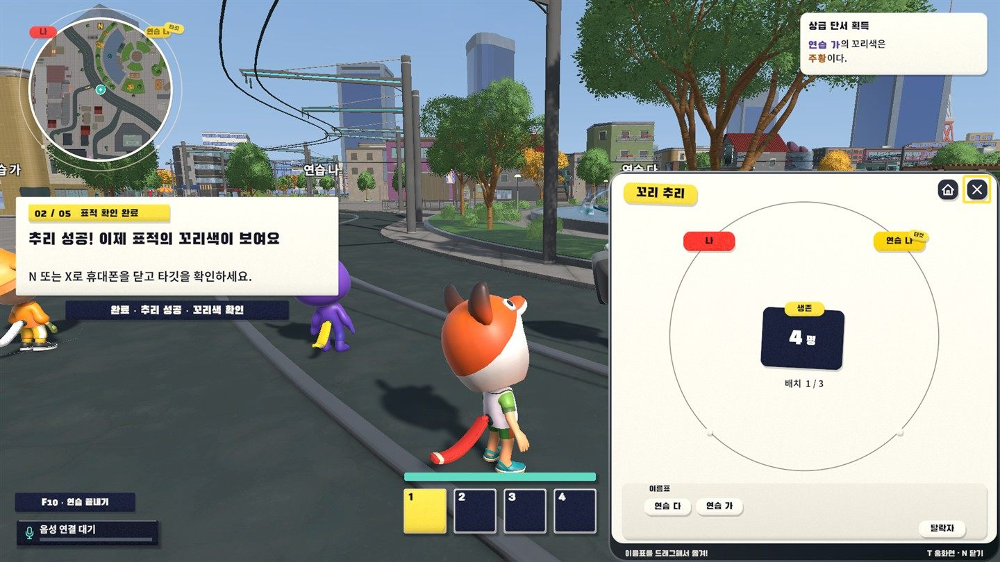
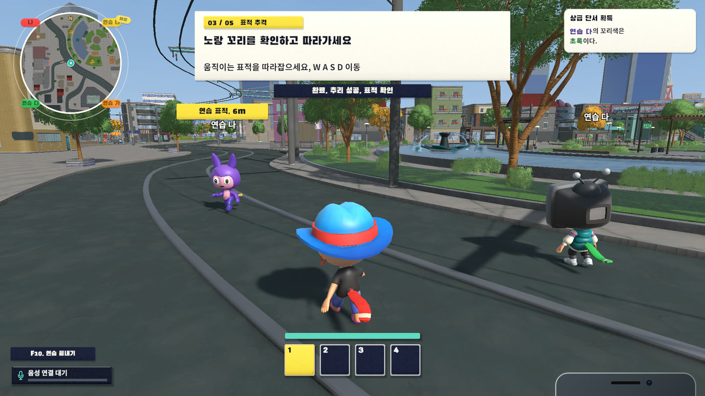
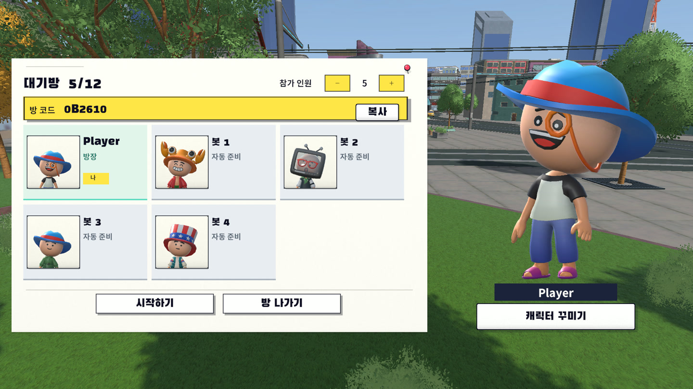
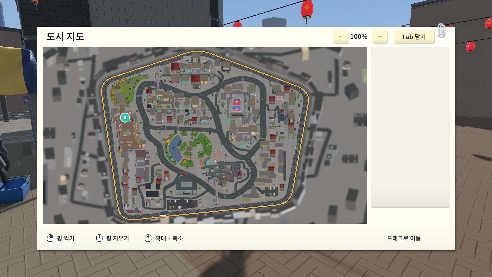
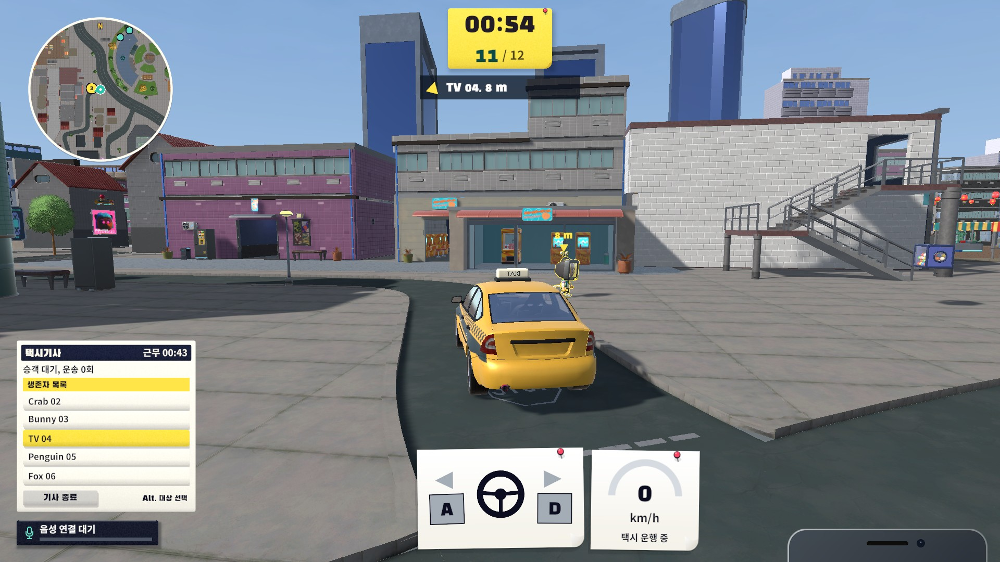

한 판이 끝나고, 어떤 동네가 기억에 남을까?
도시에서 단서를 모아 내 표적을 추리하고, 나를 쫓는 사람을 피해 꼬리를 빼앗는 게임입니다. 저는 도시의 구역마다 기억할 만한 풍경을 만들고, 그 안에서 서로의 모습과 목소리를 단서로 삼을 수 있게 기획했습니다.



제작 방식
도시가 어떤 분위기여야 하는지, 각 구역이 플레이어에게 어떤 인상으로 남았으면 하는지를 먼저 정했습니다. 전체 맵의 배치 초안과 담당 기능의 코드 구현에는 AI 도구 Codex를 활용했습니다. 제가 원하는 분위기와 플레이 규칙을 설명하면 Codex가 초안과 수정안을 만들었습니다. 저는 Unity에서 직접 플레이하며 어색한 지점을 짚고 수정 방향을 제시했고, 불필요하다고 판단한 오브젝트는 직접 지웠습니다.
제가 맡은 범위는 도시 레벨 디자인, 음성, 채팅, 튜토리얼, 대기방, 커스터마이징입니다. 중개자와 도시 이벤트는 팀 공동 작업이어서, 아래에는 제가 참여한 역할 선택과 운전 화면, 이벤트 표시 규칙을 따로 정리했습니다.
레벨 디자인
가장 중요하게 본 건 두 가지였습니다. 골목에서 광장으로 들어갈 때 풍경이 자연스럽게 이어지는지, 그러면서도 한 판이 끝나면 서로 다른 장소로 기억할 만한지였습니다. 기존 도시 에셋을 활용해 지상과 옥상을 계단으로 잇고, 길 위에서 계단 입구와 공중 보행로가 함께 보이는지 캐릭터 시점으로 확인했습니다.
플레이 검증에서는 눈에 보이는 길과 실제로 걸을 수 있는 길을 대조했습니다. 계단을 내려갈 때 낙하 자세가 나오거나 옥상에 착지했는데 발이 뜨는 구간을 찾아 충돌체와 이동 처리를 다듬었습니다.
지도 외곽도 같은 기준으로 검토했습니다. 비슷한 간격의 도로와 띄엄띄엄 놓인 둥근 녹지가 반복되자, 도로에 직선과 곡선을 섞고 나무는 길을 따라, 녹지는 건물 사이에 놓도록 수정했습니다. 외곽만 살짝 흐리게 해 도시가 계속 이어지는 느낌과 실제 플레이 경계를 함께 살렸습니다.

음성과 채팅
표적의 꼬리색은 누구에게 말하느냐에 따라 가치가 달라집니다. Photon Voice로 가까운 플레이어의 목소리를 들을 수 있게 하고, 멀리 있는 상대에게는 휴대폰으로 전화를 걸 수 있게 했습니다. 통화 중에도 주변 사람은 내 목소리를 들을 수 있어, 정보를 건넬 장소까지 선택하게 됩니다.
관전자가 생존자의 목소리를 들으며 추격을 따라갈 수 있게 했습니다. 관전자끼리는 거리와 관계없이 대화할 수 있고, 관전자의 음성은 생존자에게 전달되지 않습니다. 탈락 후에도 대화를 이어가면서 살아 있는 친구에게 표적을 알려주는 일은 막는 규칙입니다.
생존자는 1:1로, 관전자는 공용방에서 대화합니다. 테스트에서는 휴대폰을 닫고 달리는 동안 메시지가 와도 알아채기 어려웠습니다. 보낸 사람과 메시지 미리보기를 6초간 띄우고, 알림에 표시된 T 키를 누르면 해당 대화로 바로 들어가게 했습니다.
튜토리얼
처음부터 정답을 보여 주면 꼬리를 잡는 조작만 익히게 됩니다. 연습에서는 먼저 단서를 주워 휴대폰에서 다른 후보 두 명의 꼬리색을 추리하고, 마지막에 자기 표적을 지목합니다. 표적이 확인되면 상대가 달아나고, 플레이어가 직접 따라잡아 힘겨루기에 들어갑니다.
처음 만든 연습에서는 멈춰 있는 봇을 잡기만 해도 다음 단계로 넘어갔습니다. 실전처럼 먼저 상대를 알아내야 추격을 시작하도록 바꾸고, 표적이 지나치게 자주 방향을 틀지 않게 도주 경로도 조정했습니다. Unity Play에서 오답, 후보 한 명만 맞힌 경우, 두 명을 맞힌 뒤 최종 지목과 힘겨루기 진입을 차례로 확인했습니다.
대기방과 커스터마이징
옷과 장식은 이름만으로 구분하기 어려워 썸네일로 고르게 하고, 선택한 결과를 오른쪽 캐릭터에 바로 반영했습니다. 대기방에서도 같은 자리에서 옷을 갈아입을 수 있습니다. 돌아오면 참가자 카드에 각자의 상반신이 보여, 경기가 시작되기 전에 서로의 모습을 확인할 수 있습니다.
처음에는 카드마다 얼굴만 보이거나 전신이 보이는 차이가 있었습니다. 머리와 골반을 기준으로 구도를 통일하고, 상대 음량 슬라이더도 해당 참가자의 카드에 붙였습니다. 내 캐릭터는 전신 미리보기에서 드래그로 돌려볼 수 있고, 중개자 전용 복장은 경기 중 역할을 알아볼 수 있도록 일반 꾸미기 목록에서 제외했습니다.
팀 공동 시스템
전체 지도를 열어야 승객의 위치를 확인할 수 있어 운전 중에는 시선이 자주 끊겼습니다. 빈 택시에서는 왼쪽 기사 카드에 생존자 목록을 펼쳐 두고, Alt로 커서를 열고 닉네임을 선택하면 커서가 닫히고 운전으로 돌아가게 했습니다. 선택한 사람의 방향·이름·거리는 타이머 아래에 표시하고, 승객이 타면 목록을 접어 운송 정보에 자리를 내주도록 했습니다. 관전 화면에서는 지원할 중개자 역할을 목록에서 고르게 했습니다.
같은 발자국도 꼬리색을 추리한 사람에게는 해당 색으로, 아직 모르는 사람에게는 흰색으로 보이게 했습니다. 표식 이벤트에서는 보유자의 지도 표시와 표식을 지우는 정리소를 알아볼 수 있도록 부스 외형과 지도 아이콘을 다듬었습니다.
